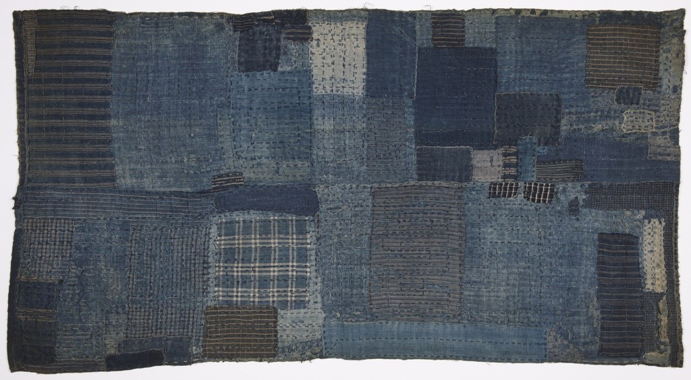

一件衣服破了，可以補。補過的地方再破，可以換一塊布繼續補。等到深淺不同的布片佔滿衣身，還能不能指出哪一塊才是「原來的衣服」？在日本襤褸織品 boro 的展覽裡，這不只是關於保存的難題。那些曾被反覆穿用、修補的衣服，如今被懸掛、照亮，讓人繞著看。衣服未必換了，觀看它的人與場合，卻已經不同。
明尼阿波利斯藝術博物館收藏一件日本工作衣 noragi，編號 2019.20.51。館方定年為十九世紀末至二十世紀初，材料欄列出棉布拼接、刺子補強縫與靛染。它由 Thomas Murray 收藏購入，進入館藏後，有了可追查的編號、尺寸與材料紀錄[1]。
這份紀錄能讓我們知道它是什麼，卻沒有告訴我們每一塊補丁由誰縫上。不能因為補丁重疊，就替它編出祖母傳給孫女的完整故事。留下來的衣服是一份材料證據，不是已經寫好的人物傳記。
但那些接縫仍值得細看。補丁讓磨薄的地方重新有布可承受拉扯，也把不同時間取得的材料留在同一件衣服上。從「原來的部分剩多少」換成「如何繼續使用」，我們才比較接近修補者面對的問題。
boro 常被譯作襤褸或破布，談的是反覆拼接、補綴的織品，既包括工作衣，也包括被褥、睡墊與其他日用品。它不是一款固定版型，更不能只靠藍色、破洞與白線，就判定眼前是同一種歷史物件。
在棉布普及以前，日本農村衣料也使用苧麻、大麻等植物纖維。Cooper Hewitt 的館藏說明指出，棉布雖然柔軟、保暖，對許多農漁民與勞動者仍然昂貴；碎布交易於是沿商路把棉布殘片帶到需要它的人手裡。舊衣不只是在一戶人家內部循環，也可能先經過買賣與移動，再進入另一個人的生活。
這讓深淺不一的拼布有了另一種讀法。它不只是配色選擇，也反映修補者當時拿得到什麼。珍惜材料，和缺乏取得新材料的條件，可以同時存在；把這些衣服只看成節儉美德，便會漏掉使修補成為必要的限制。
Cooper Hewitt 收藏的一張兒童睡墊，將多層手織靛染棉布碎片組合起來。館方描述，布片邊緣經過整理，再以遍及表面的密集針腳固定各層。這類墊子可直接用來睡，或鋪在日式被褥下方[2]。
這裡的縫線不只是表面裝飾。把零散布片接起來、把多層材料固定住，成品才能承受繼續使用。衣物與睡墊的構造不盡相同，但都讓我們看見：延長一件東西的生命，需要時間與具體的手上工作。
瑞典東亞博物館在 2021 年的 boro 展覽中，將日本北方農漁村的這類工藝放回女性勞動的脈絡。那提醒我們，所謂「沒有浪費」，往往不是物品自己辦到的，而是有人辨認磨損、找布、穿針、縫好，再在下一次損壞時重新開始。今天稱讚一件物品耐用，也可以順便問：維持耐用的人，付出了什麼？

從生活用品變成展品，並非衣服自然老去後就會發生。田中忠三郎收集的織品，後來成為東京 Amuse Museum 的重要展示。2014 年的觀展記錄寫到，觀眾能觸摸厚布、把手伸進手套，透過觸感接近它們原來的用途。這是一段當年的展示歷史，不是今天的參觀資訊。
2020 年，紐約 Japan Society 的《Boro Textiles: Sustainable Aesthetics》展出田中收藏中的五十餘件歷史織品，由 Amuse 借展。原本分散在日常生活裡的物件，經過收集、保管、研究、借展，才到達另一座城市的展間。
瑞典展覽也指出，boro 曾被看作貧窮年代的羞恥提醒，後來卻被國際藝廊與時尚品牌重視。這是策展敘事中的價值轉變，不表示每位穿用者都有相同感受。它仍讓問題變得尖銳：一件東西被誰看見，為什麼能改變它是否值得被保存？
紐約展覽沒有只把衣服平貼在牆上。SO-IL 設計的懸掛與反光底座，讓觀眾可以繞行，也能看見衣內與鞋底。實際觀展評論還記錄了衣內燈光與透明支架：原本隱藏的縫補，被帶進觀看的中心。
展覽同時並置川久保玲、三宅一生、山本耀司的服裝，以及當代藝術家的作品。這樣的安排提出一種觀看邀請：把拼接、層疊與不規則，也當作值得認真理解的形式。藝術史學者 Anne Higonnet 在評論中指出，展覽借用博物館的聲望，提出不同的美感，而不只是展示觀眾早已同意的美[6]。
這是展覽的力量，也是觀看時需要留意的選擇。補丁被照得很美，不會讓當年的寒冷變輕；被稱為藝術，也不會自動補回修補者的姓名。欣賞形式時若仍記得它曾經要保暖、要耐磨，就比較不會把生活的困難只留下漂亮的表面。
把 boro 帶回今天，不一定要仿作一件看起來很舊的衣服。更接近日常的問題是：我們允不允許修過的痕跡留在眼前？一塊顏色不合的補布，會讓物品顯得失敗，還是讓照顧它的過程變得可見？
修補也不必變成另一種要求所有人遵守的美德。有人有時間、手藝與工具，有人需要的是買得到合用的新衣。把選擇與匱乏分開，才能欣賞過去的技藝，而不要求今天的人重過同一種艱難生活。
博物館能保住一件衣服，研究能補回它的年代與材料，展覽能讓更多人停下來看。至於我們願不願意連同補丁後面的勞動一起看見，仍是觀看者要做的事。衣服的價值，不只在於它被補得多美，也在於它曾怎樣幫一個人把生活繼續過下去。